To be honest, street photography may be the most unfair type of photography.
The same street, the same crowd, the same afternoon. One person's shot makes you stare for three minutes. Another's makes you scroll past in under a tenth of a second.
Where is the difference?
It is not the camera. Not the filter. Not luck.
It iscomposition.。
And the composition here may not be the one you think of.
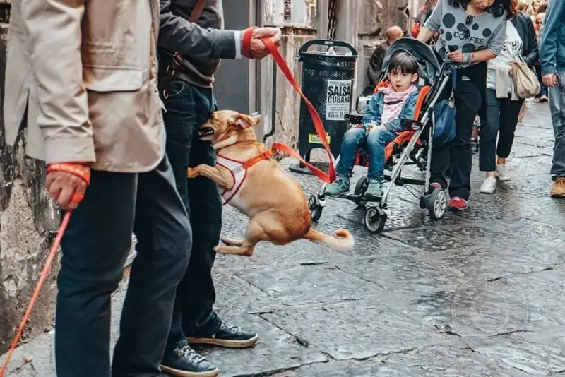
▲ ©Stefano Lista
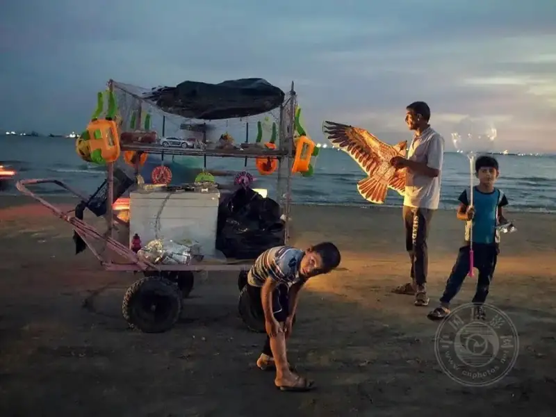
▲ ©Yaghoub Hozori
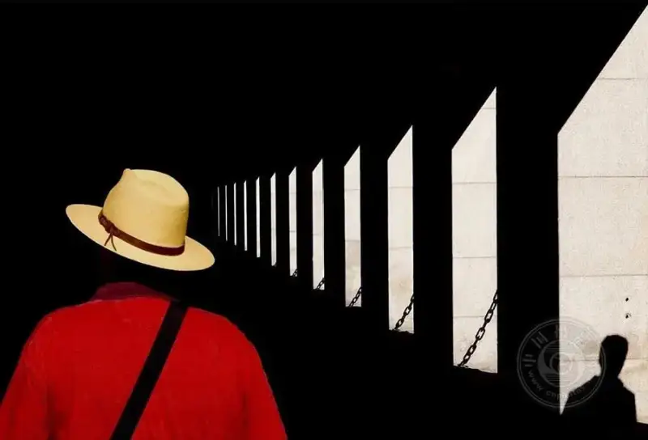
▲ ©Andreas Jorgensen
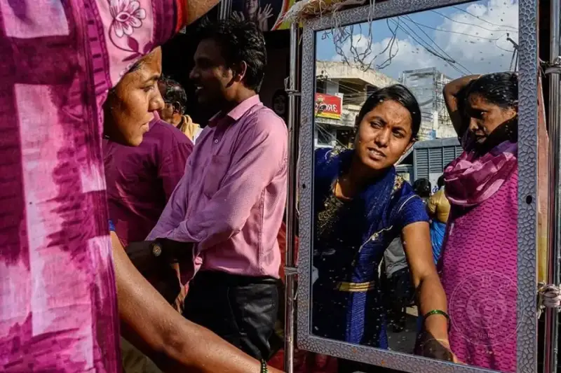
▲ ©Anna Biret
Composition is not how you pose, but how you see.
When many people hear composition, they think of the rule of thirds, the grid, or symmetry. These are not wrong, but they are only the surface.
True composition is, before you press the shutter,a silent arrangement already completed in your head.。
What you think about is:
• Where this line leads, the viewer's eye will follow.
• This light on the face: is the mood warm or lonely?
• If that person steps two paces left, will the frame be more interesting?
In the end, street composition is not a technical problem. It isa problem of observation.。
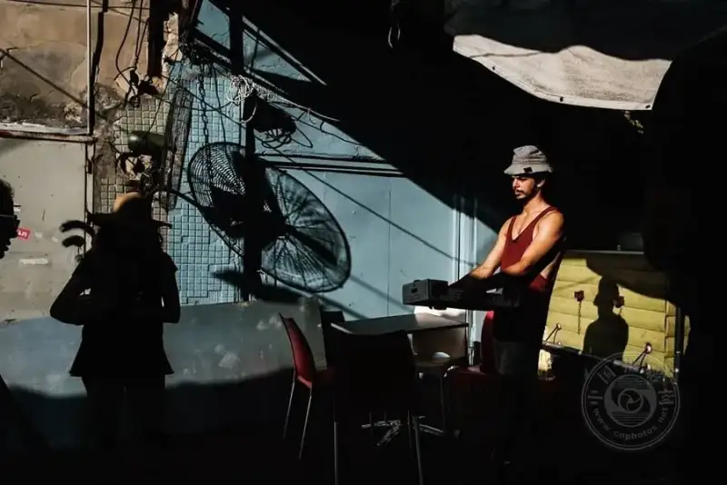
▲ ©Gabi Ben Avraham
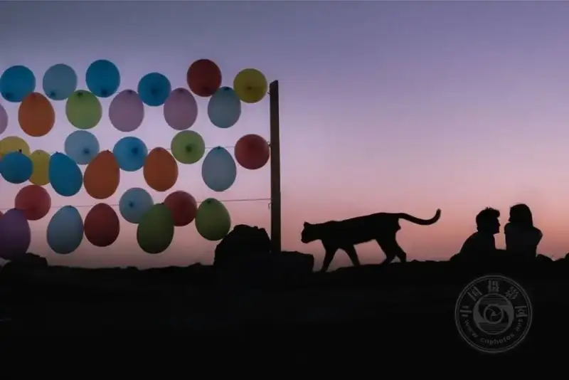
▲ ©Yusuf Duyar
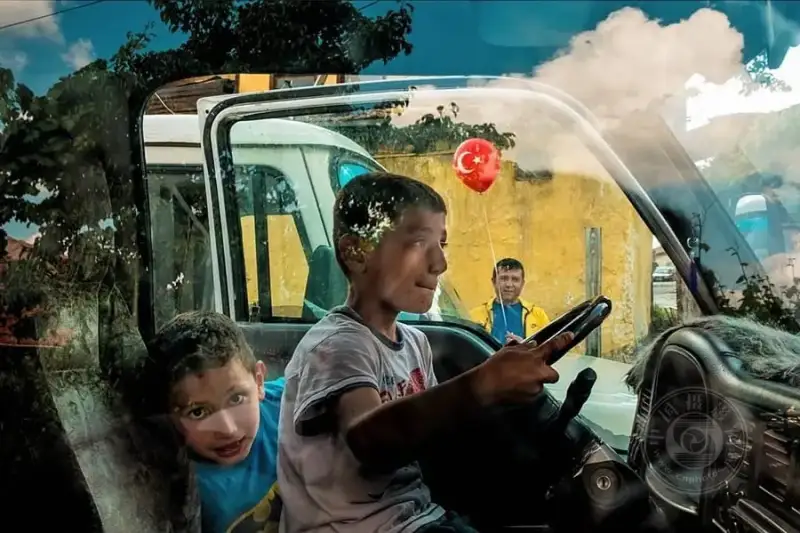
▲ ©Ilker Karaman
What makes those photos that you cannot explain but feel amazing?
Let me break it down. You will find there is a pattern.
First, lines lead the way.。
A stairway into the distance, a row of streetlights, a railway line cutting across the frame. These naturally pull your gaze forward. A photo is flat, but lines give itdepth,and give a flat image a sense of space.
Second, patterns are addictive.。
The city is full of repeating rhythm: a row of neat windows, an even line of bicycles, a stretch of patterned tiles. When you shoot these, the photo gainsrhythm.Like a drumbeat in music, you cannot see it, but you can feel it.
Third, light and shadow are the cheapest magic.。
No need to buy lights or carry a reflector. The sun is the best lighting person. A shadow on a wall, light leaking through a door crack, a person left only as a silhouette in backlight.Once the light and shadow are right, the mood is instantly full.。
Fourth, putting strange things together gives striking results.
A suited professional squatting by the road eating a pancake, a grandma doing tai chi before a graffiti wall, a luxury car parked at a market gate. Thesemismatched combinationsare exactly when great shots happen. Because it makes people pause, then smile, or think.

▲ ©Jonathan Murillo

▲ ©Reyhan Turk

▲ ©Somnath Mullick
The decisive moment is not luck. It is waited for.
That guy Cartier-Bresson named a term: the decisive moment.
It sounds mysterious. In plain words:Everything is just in the right place, and at that moment you just press the shutter.。
But do not think this is a lucky hit.
Behind this just-right:
• You may have stood at a crossing for forty minutes.
• You may have followed one person for three streets.
• You may have pre-focused at that spot, just waiting for him to step into that light.
A good photo is seventy percent waiting and thirty percent shooting.。

▲ ©Andreas Jorgensen
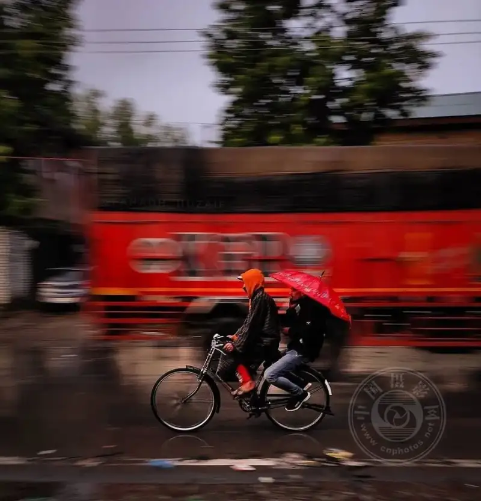
▲ ©SHEIKH HUZAIF

▲ ©Emir Sevim

▲ ©Debrani Das
Three common composition tricks even beginners can use.
Here are some practical ones.
• Rule of thirds.Cut the frame into thirds both ways, and place the subject at an intersection. It is far livelier than the center. Old, but it works.
• Frame composition.Find a door, window, or arch and frame the subject inside. The frame gains depth at once, and the viewer's eye is locked inside and cannot escape.
• Balance the frame.Do not pack the left side full and leave the right as if a piece were cut out. The visual weight must be even for a comfortable look.
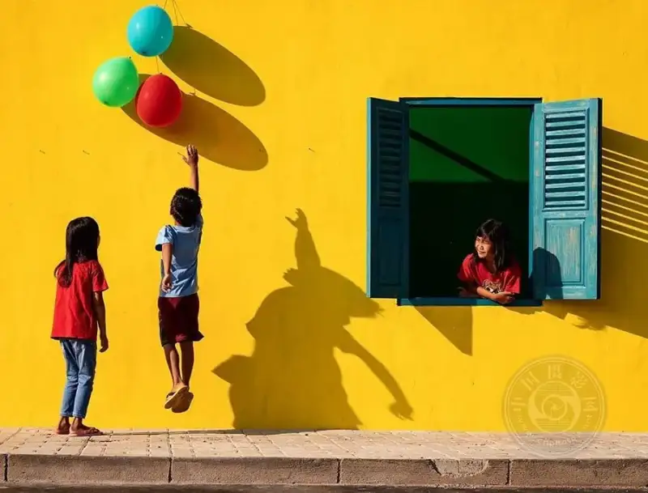
▲ ©Prima Mareti
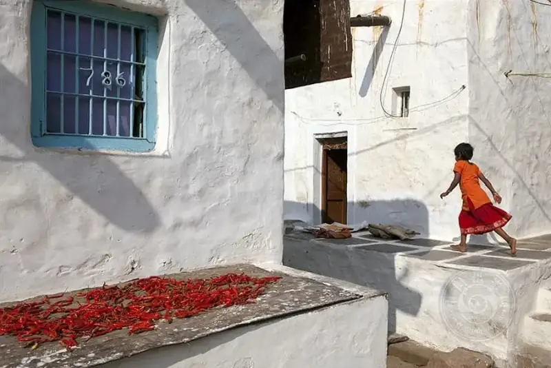
▲ ©Claude Renault

▲ ©Alfredo Carmona
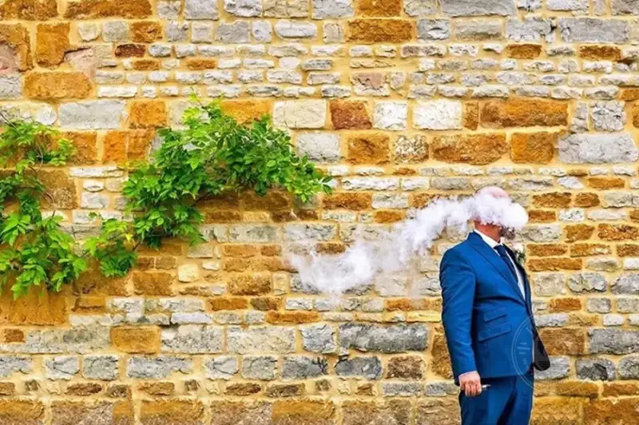
▲ ©Dan Morris
In the end, street photography is not about technique but about eye.
Composition tricks are only a few, and they take ten minutes to learn.
But turning them intoinstinct,needs you to walk many roads, see many people, and waste many shutters.
A true street photographer does not just shoot well, butsees differently.。
• Others see passersby. He sees stories.
• Others see shadow. He sees shape.
• Others see chaos. He sees order.
This ability is not born. It is trained.
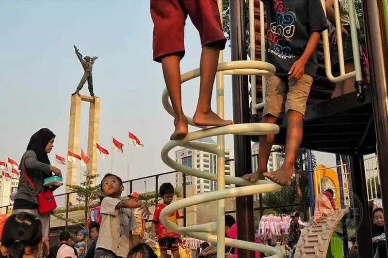
▲ ©Chris Tuarissa
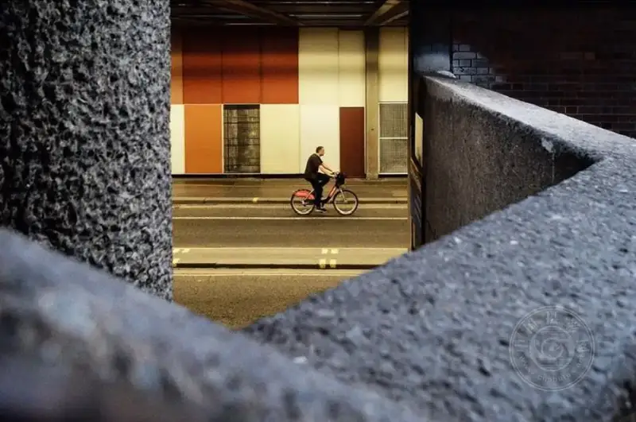
▲ ©Craig Reilly

▲ ©Anna Biret
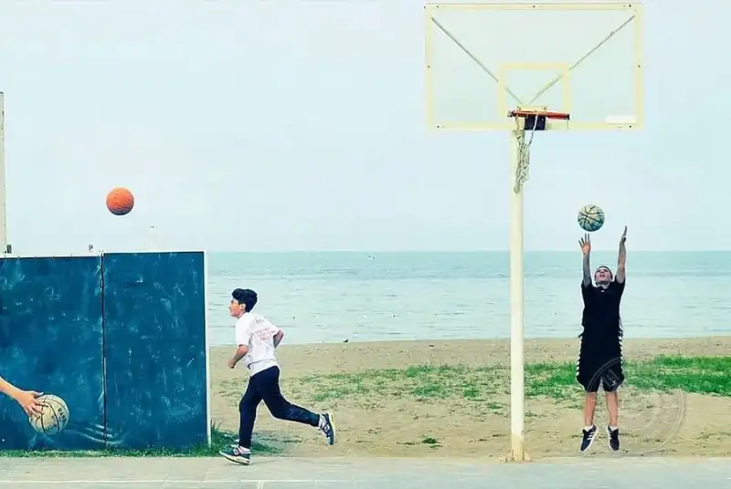
▲ ©Ilker Karaman
So if you like street photography, do not rush to upgrade your gear.
Take the phone or camera you have now, and go out onto the street.
Look first, then shoot.。
Then you will find that the so-called decisive moment happens every day right under your eyes.
You just did not see it before.

▲ ©Aniruddha Guha Sarkar
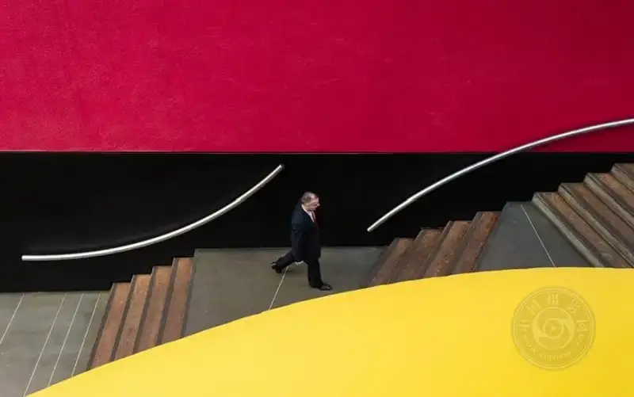
▲ ©Apolo Sales

▲ ©Maciej Dakowicz
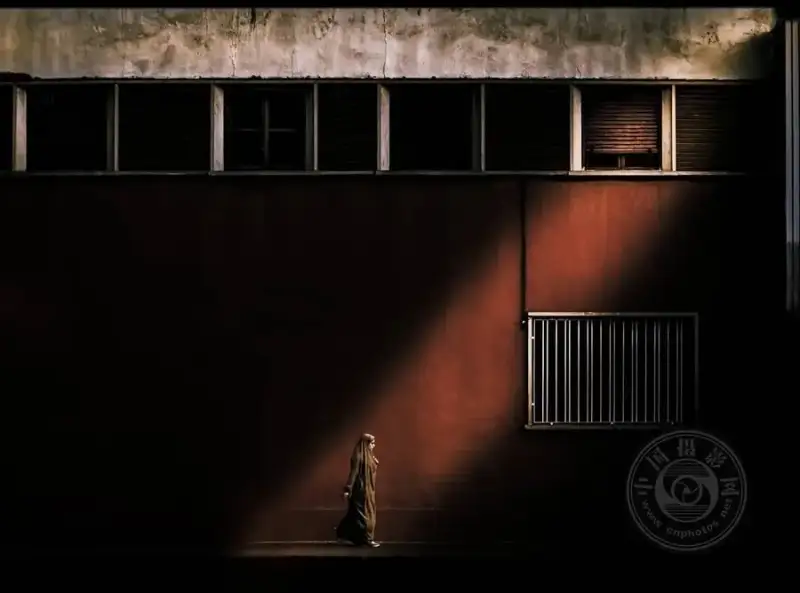
▲ ©Joaquín Luna

▲ ©Dah Bagus

▲ ©VIncen

▲ ©Çağdaş Kul

▲ ©Eric Davidove